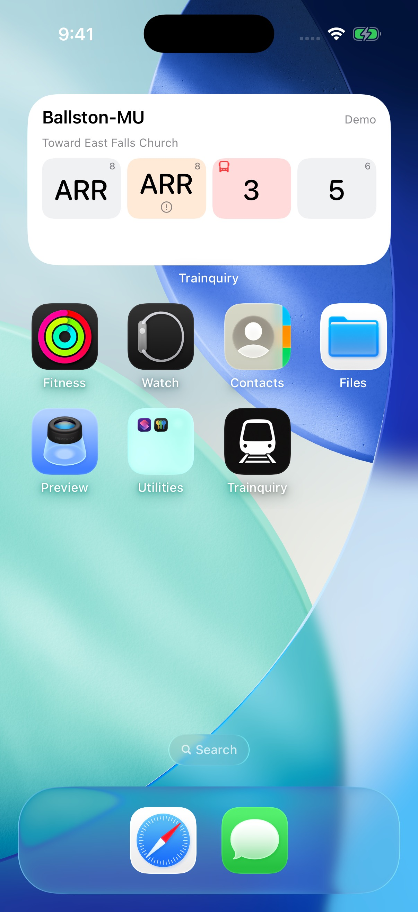

Trainquiry
Washington Metro arrivals on your Home Screen, Lock Screen, and Apple Watch.

View on the App Store
Coming to the App Store.
Washington Metro arrivals on your Home Screen, Lock Screen, and Apple Watch.

Coming to the App Store.
Data from WMATA. Trainquiry is not affiliated with or endorsed by WMATA.